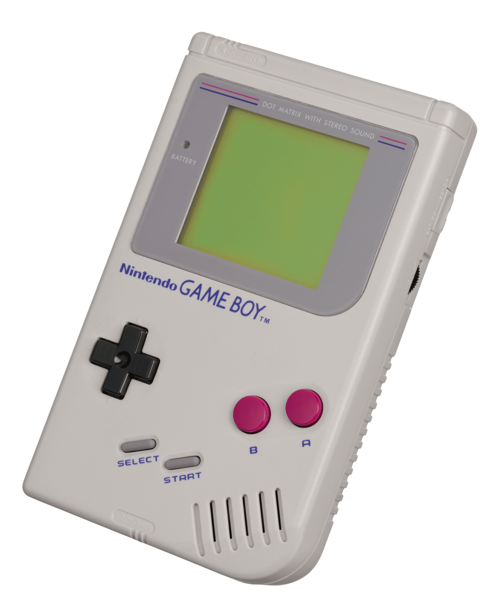

Handheld gaming consoles have existed for years as a way to provide entertainment for those on the go, with a history lasting since 1979.
1979 - The Milton Bradley Company creates the Microvision, the first handheld console to use interchangeable cartridges.
1981 - Entex Industries releases the Select-A Game with 2 attached controllers, making it the first multiplayer handheld.
1984 - The Palmtex Portable Videogame System is released, the first non-monochrome handheld.
1989 - Nintendo releases the Game Boy. Over 1,244 titles are released for the console, and it remains the best-selling handheld until 2010. The Atari Lynx becomes the first handheld console with a colour LCD.
1990 - The Sega Game Gear is released, featuring a colour screen with a backlight. While sales lagged behind the Game Boy, it outsold many competitors.
1995 - Sega releases the Nomad, which could play the entire library of the Sega Genesis. A lack of exclusives combined with a poor launch window led to it being considered a commercial failure.
1998 - The Game Boy Color launches, a hardware revision of the original Game Boy with a colour screen.
2001 - Nintendo releases the Game Boy Advance, featuring backwards compatibility with GB/GBC games and receiving around 1,500 games.
2004 - The Nintendo DS releases, featuring 2 screens, a touchscreen and Gameboy Advance backwards compatibility. This feature is dropped from a future hardware revision, the DSi, in favour of downloadable games. It sells 154 million units.
2004 - Sony releases the PlayStation Portable, which uses Universal Media Discs as physical media and features online connectivity. It sells 80 million units.
2011 - Nintendo releases the 3DS, with stereoscopic 3D projection without the need for 3D glasses. Sony releases the PlayStation Vita as a successor to the PSP. It is considered a commercial failure but has gained a cult following.
2016 - The original open-source Arduboy is released, based on the Arduino hardware platform.
2017 - The Nintendo Switch is released. It is the first mainstream "hybrid console", capable of being played as a handheld or as a home console.
2021 - The Analogue Pocket is released, capable of playing cartridges for older handhelds such as Game Boy Advance, Game Gear and Neo Geo Pocket.
2022 - The Playdate is released, featuring a crank as a control method. Valve releases the Steam Deck, the first mainstream handheld PC.
Sources cited:
Wikipedia/List of Handheld Game Consoles